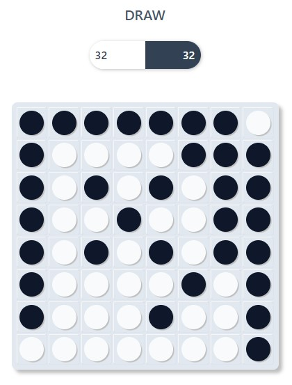
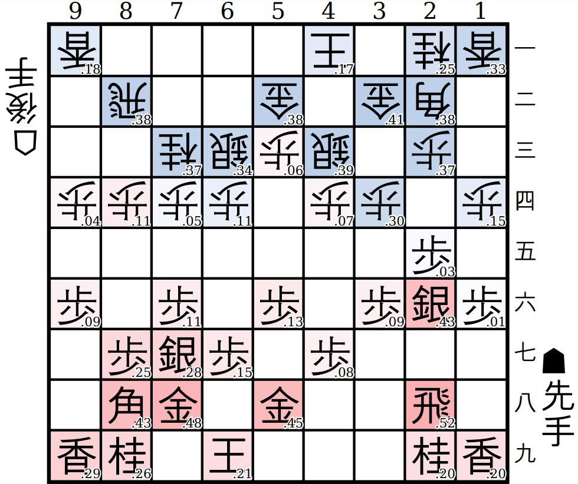
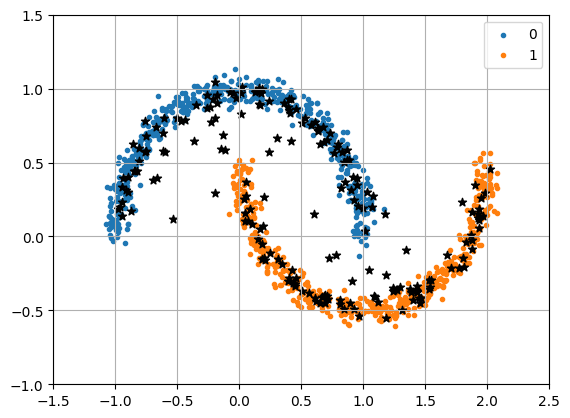
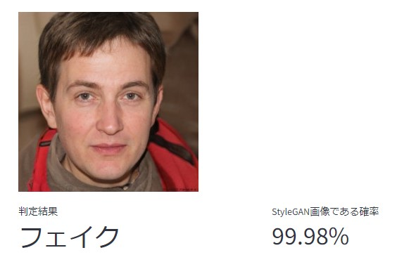
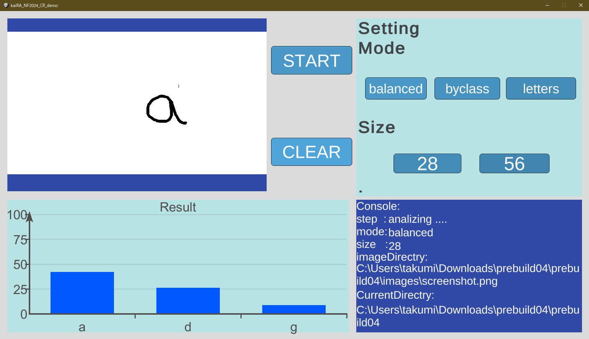

忖度オセロAI
世の中には強いオセロAI、弱いオセロAIがたくさんありますが、プレイヤーとちょうど良い勝負をしてくれるようなAIはなかなかありません。 そこで、プレイヤーの強さに応じて忖度を行い、ちょうど良い勝負をしてくれるようなオセロAIを作成しました。
京都大学11月祭
About KaiRA
京都大学人工知能研究会(KaiRA)は、AIについて学んでいるサークルです。
毎週木曜日に勉強会を行っており、今期は音声認識についての本と自然言語処理についての本を輪読しています。 読みたい本があれば、人を集めてみんなで読むことも可能です!
活動の中心は毎週木曜日の勉強会ですが、制作物を作ったり、チームを組んでkaggleなどの機械学習コンペティションに参加したりもしています。
スポンサーとして株式会社Ristさんと株式会社スクラムサインさんが付いてくださっており、サークルメンバーに対して本の購入補助や計算機代の補助もしています。
11月祭の展示で興味を持った方がいればぜひ一緒に勉強しましょう！
Journal
11月祭に向けてサークルメンバーで会誌を作成しました。少しでもAIの技術について興味を持っていただけたら幸いです。
今話題のChatGPT、ゲームAI、画像生成にもフォーカス！！ 合計100ページと内容盛りだくさんです！
目次
Demos
11月祭会場ではAIに関するデモを行っていますが、一部のデモはオンラインでもご覧になれます。 ぜひ楽しんでいってください！！

世の中には強いオセロAI、弱いオセロAIがたくさんありますが、プレイヤーとちょうど良い勝負をしてくれるようなAIはなかなかありません。 そこで、プレイヤーの強さに応じて忖度を行い、ちょうど良い勝負をしてくれるようなオセロAIを作成しました。

2023年10月、藤井聡太さんが前人未到の八冠独占を達成しました。 藤井さんはAIを用いた将棋の研究をしていることでも有名です。 AIがどれほど強いのか、腕試ししてみませんか？

拡散モデルでは、画像をある確率分布に従ってランダムにサンプリングすることで画像を生成しています。
サンプリングには色々な方法がありますが、データの分布が分かりやすいデータセットに対してサンプリング手法を複数個試したので、ぜひ実際にそれぞれのサンプリング手法を体感してみてください。
Stable Diffusionなどの拡散モデルではガイダンスと呼ばれる手法で生成する画像の種類を制御したりしますが、ガイダンスについてもデモがあります！
元のデータと似たようなデータを生成することができることやガイダンスによって生成するデータの種類を変えることができるということが体感できるでしょう！

近年、画像生成技術が発達したことで、インターネット上の画像が本物なのか、それとも偽物（AIで生成された）画像なのかを見分けることが難しくなってきました。 そこで、ある画像が本物なのか、それともAI*で生成された画像なのかを判定するモデルを作りました。
*本デモは、StyleGAN2で生成された画像かどうかを判別するのに特化したモデルです。Diffusion Modelなどによる生成画像はこのAIでは判別できません。
あなたの顔が、50人の芸能人のうち誰に似ているかを判定するAIです。さらに、その判定根拠をGrad-CAMというXAI手法を用いて可視化します。
